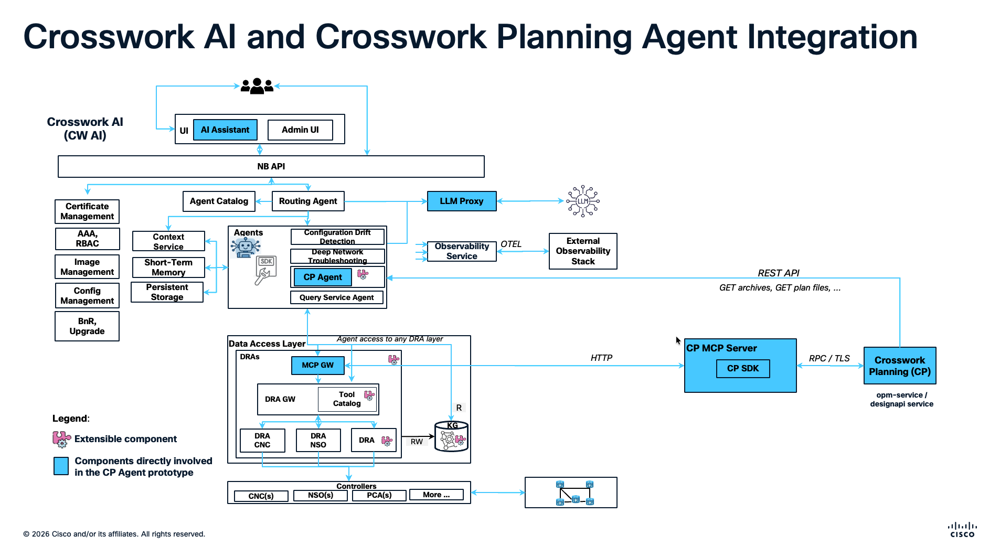
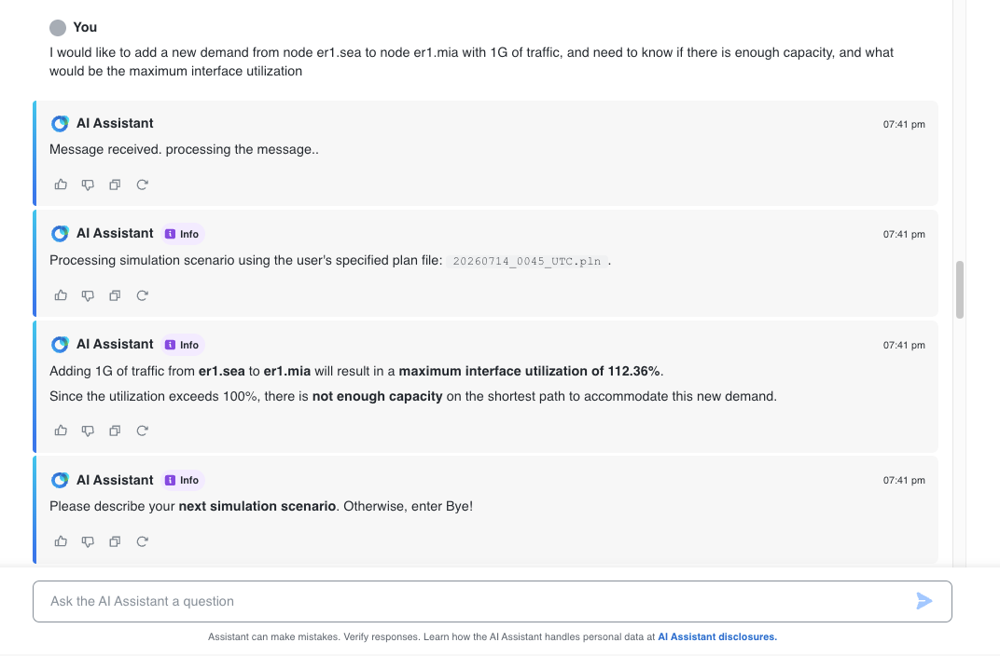

In modern networks, planning processes built around manual data collection, isolated tools, and periodic analysis are becoming a bottleneck. As network complexity and scale increase, teams need a more continuous, data-driven way to evaluate capacity, risk, and change.
For years, network planning has relied on periodic analysis, manual data collection, and static modeling. These practices served the needs of simpler architectures, but they do not scale easily across modern, high-capacity environments. The result is greater operational complexity, slower time to market, and fewer opportunities to evaluate optimizations before they are needed.
Autonomous network planning represents a fundamental shift: from manually invoking individual tools and workflows to expressing planning intent and allowing intelligent automation to coordinate the analysis. This enables organizations to move beyond planning only for current needs and begin anticipating future capacity, risk, and service requirements.
Network planning requires engineers to combine topology, traffic demand, capacity, failure scenarios, and business constraints across multiple tools and data sources. Even when application programming interfaces (APIs) and automation are available, engineers must understand which application, script, or endpoint to use, how to construct each request, and how to combine the results into a defensible recommendation. This makes sophisticated planning workflows difficult to scale and often limits them to a small group of specialists.
An agentic approach changes the interaction model from executing individual commands to expressing planning intent. Instead of manually coordinating every step, an engineer can describe the desired outcome in natural language—for example, asking whether the network can accommodate a new service, where capacity will be exhausted first, or how a particular failure could affect critical traffic. The agent can then identify the appropriate tools, validate the relevant network entities, execute the required analyses, and synthesize the results.
This creates business value in four areas:
Together, these capabilities shorten planning cycles, reduce dependence on specialized tool knowledge, and allow engineering teams to evaluate more alternatives before making a decision. The goal is not to remove the network planner from the process. It is to move the planner from manually operating and coordinating each tool to supervising an intelligent, traceable workflow. Network planners remain responsible for reviewing assumptions, assessing tradeoffs, and approving consequential actions, but they can spend less time constructing API calls and managing scripts—and more time applying engineering judgment to risk, strategy, and business outcomes.
Realizing this value is a progressive journey rather than a single technological leap. The evolution toward autonomous network planning is built on three distinct pillars: a strong planning foundation, programmatic acceleration through APIs and software development kits (SDKs), and an agentic future capable of reasoning across tools and workflows.
Autonomy depends on a trustworthy planning foundation. Crosswork Planning (CP) provides that foundation by bringing network design, modeling, simulation, and optimization into a unified planning environment.
By providing a unified view of the network and advanced modeling capabilities, Crosswork Planning allows teams to:
While the Crosswork Planning application supports human-led analysis, its APIs and Python SDK extend the same planning capabilities into repeatable, programmatic workflows. Organizations can use these interfaces to automate recurring analyses and integrate planning into broader engineering processes.
The Python SDK gives engineers a Pythonic interface for building custom planning workflows and integrations. Those workflows can feed continuous integration and continuous delivery (CI/CD) pipelines, operational systems, or scheduled analyses. Just as importantly, the same functions can be exposed as well-defined, agent-callable tools, creating a bridge from deterministic automation to agentic orchestration.
Artificial intelligence (AI) agents add a reasoning and orchestration layer above those programmatic capabilities. If APIs and SDK functions provide the “hands” that execute planning tasks, an agent interprets the planner’s intent and coordinates which tools should be used, in what sequence, and with which inputs. However, agents are only as effective as the tools and safeguards available to them.
By exposing the Python functions created in the previous step, teams can give agents a library of planning actions. Reliable use depends on precise tool names, descriptions, input schemas, and predictable outputs. Structured data reduces ambiguity for large language models (LLMs) and makes results easier for both systems and planners to validate. In this model, the agent can select tools, coordinate analyses, and explain results, while the network planner retains responsibility for reviewing assumptions and approving consequential decisions.
For reliable tool use, each function should return predictable, structured data such as JavaScript Object Notation (JSON) and clearly report the execution status, requested entity, measurements, units, and any errors.
Representative Tool Example:
def get_link_utilization(link_id: str):
# Logic using CP SDK to query the network model
return {
"status": "success",
"data": {"link_id": link_id, "utilization_pct": 75.5}
}
Agents can access planning capabilities through tools packaged locally in their execution environment or through tools exposed by an MCP server. MCP is most valuable when tools need to be reusable, isolated, standardized, or shared. Local tools are often the simpler choice for small, dedicated functions that do not require a separate service boundary.
| Decision Factor | Prefer MCP When | Prefer Local Tools When |
|---|---|---|
| Reuse | The same capabilities should be available to multiple agents, teams, or environments. | The function is dedicated to one agent or workflow and is unlikely to be reused. |
| Isolation and control | Credentials, dependencies, rate limits, or access policies benefit from being managed behind a separate service boundary. | The logic is self-contained and can safely operate within the agent’s execution environment. |
| Integration approach | A consistent protocol is needed to expose an expanding or shareable tool ecosystem. | Native tool calling already provides the required integration without introducing another service. |
| Function complexity | The tools represent substantial integrations or workflows that should evolve independently from the agent. | The work consists of a simple one-off function or trivial calculation where MCP would add unnecessary operational overhead. |
MCP is particularly useful when interoperability and separation of concerns are important. By decoupling tool implementation from agent reasoning, MCP allows compatible agents to discover and invoke tools dynamically through a consistent interface, while keeping tool definitions and input schemas explicit.
Representative MCP Tool Definition (JSON Schema):
{
"name": "get_link_utilization",
"description": "Returns current utilization for a specific link.",
"inputSchema": {
"type": "object",
"properties": {
"link_id": {
"type": "string",
"description": "Unique identifier of the link to query."
}
},
"required": ["link_id"],
"additionalProperties": false
}
}
For the prototype described below, MCP was selected because the CP planning tools represent reusable integration capabilities rather than simple one-off functions. Hosting them in the CP MCP Server separates the agent’s reasoning from the implementation of the planning tools, provides a boundary for managing access to CP, and allows the tools to evolve independently from the CP Agent. It also aligns with the Crosswork AI architecture, where the MCP Gateway provides the standardized connection between agents and external tool services. The following architecture shows how these components work together.
Crosswork AI is a production-ready, multi-agentic framework that brings together Cisco-built agents, the Crosswork AI Agent SDK (ADK), and shared platform services for developing and operating agents. Beyond the built-in agents, the framework provides capabilities such as agent observability and tracing, agent evaluation, planning and orchestration services, governed model access, and standardized tool integration.
Custom agents built and onboarded with the Crosswork AI ADK can leverage these shared components and services instead of implementing the entire operational foundation independently. This allows agent developers to focus on domain-specific reasoning and tools while benefiting from the broader capabilities of the framework.
A detailed review of the complete Crosswork AI architecture is outside the scope of this blog. To keep the discussion focused on autonomous network planning, the architecture below highlights only the components that were most relevant to building the CP Agent prototype. It represents prototype work and is not a productized CP Agent. The prototype relies on the following components:
opm-service and designapi interfaces to the CP simulation engine.
Deploying a custom agent with Crosswork AI can be summarized in three high-level steps:
cwaictl command-line interface (CLI).After selecting a plan file, the planner asks whether the network can support an additional 1 gigabit per second (Gbps) demand between two sites. The CP Agent interprets the request, invokes the appropriate planning tools through MCP, runs the simulation in Crosswork Planning, and evaluates the resulting interface utilization.
In the recorded example, the simulation predicts a maximum interface utilization of 112.36%. Because the projected load exceeds available capacity, the agent concludes that the shortest path cannot safely accommodate the new demand. This turns a natural-language request into an evidence-based planning decision—without requiring the planner to identify individual APIs, prepare scripts, or manually coordinate the simulation workflow.
After presenting the result, the agent keeps the interaction open and invites the planner to describe the next simulation scenario. This conversational workflow allows planners to iteratively evaluate alternatives, refine assumptions, and investigate more advanced questions—such as identifying the interfaces most affected by a potential failure—without restarting the analysis or manually assembling a new workflow.

See the CP Agent in Action: Watch the complete prototype workflow—from registration and deployment to iterative simulation scenarios—in the following demonstration.
Network planning does not become autonomous in a single step. It begins with a trustworthy network model and simulation environment, expands through APIs and a Python SDK that make analyses repeatable, and gains a new interaction and orchestration layer through AI agents. The three pillars described in this blog are therefore complementary: each one provides capabilities that the next depends on.
The CP Agent prototype demonstrates the practical value of combining those layers. A planner can express a capacity question in natural language, allow the agent to select the appropriate tools through MCP, run the simulation in Crosswork Planning, and receive a quantitative result that supports a decision. The conversation can then continue with additional scenarios, making it possible to explore alternatives without rebuilding the workflow for every question.
The objective is not to remove the network planner or to automate every decision immediately. It is to make sophisticated planning workflows more accessible, scalable, and traceable while preserving engineering oversight. As the tools, safeguards, and operating practices mature, teams can progressively move from manually coordinating individual applications and scripts to supervising validated, agent-assisted planning decisions—one well-defined use case at a time.